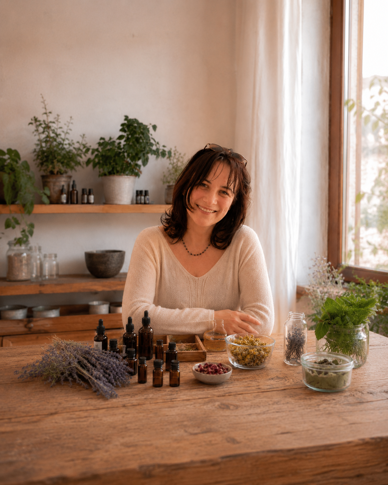

Jmenuji se Rita
Esenciální oleje jsou součástí mého každodenního života už několik let. Používám je doma, v práci i na cestách — a čím víc jsem je poznávala, tím víc mi dávaly smysl. Tento průvodce vznikl proto, abyste nemuseli hledat tak dlouho jako já. Jednoduše, přehledně, bez zbytečných složitostí.

Doporučuji produkty od BEWIT, protože jim skutečně věřím. A ta důvěra nevznikla jen z katalogu — osobně jsem navštívila jejich zázemí v Ostravě. Prošla jsem sklady i výrobou a viděla na vlastní oči, jak péče o kvalitu vypadá v praxi.
BEWIT pochází z Ostravy a je to česká firma, za kterou stojí skuteční lidé s jasnou vizí: příroda bez kompromisů. Jejich oleje jsou 100% přírodní, bez jakékoliv chemie. Žádné příměsi, žádné náhražky — jen čistá příroda. Tohle není jen slogan, je to přístup, který jsem si sama ověřila.
BEWIT = BE WITH IT — tedy „Buďte s tím — se svým vnitřním Zdrojem, Esencí a s Bohem." Název firmy není náhoda — odráží filozofii, se kterou jsou oleje vyráběny a nabízeny.